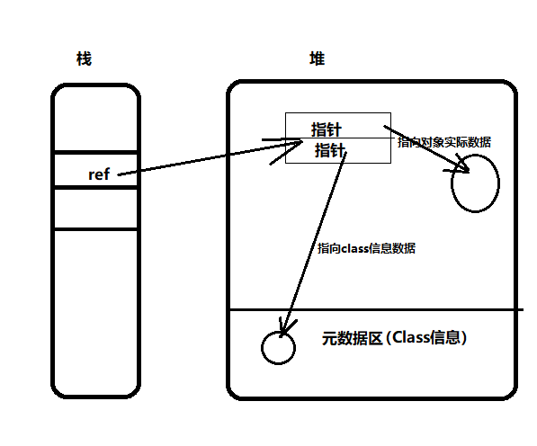
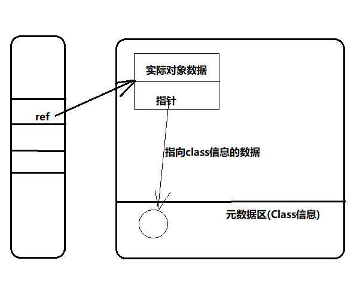

JVM内存区域分了如下几个区域：
虚拟机栈(Stack Frame)
在执行一个方法的时候，会有一个栈帧，用来存储，方法里边的操作数的出栈入栈，当java文件编译完成的时候，max_stack(栈最大的深度),max_local(最大局部变量表有多少个元素)等都是确定的。
程序计数器(Program Counter)
记录方法执行的位置，线程切换回来之后继续从这个位置执行。
本地方法栈
主要执行本地方法，native 方法
堆(Heap)
所有进程共享的。
我们子啊操作对象的时候，是使用引用的方式去操作对象的，引用放在栈帧里边，对象放在堆里边。
那么引用指向的对象在对里边存储有一下2种方式：


都是指针
栈指向堆里边的那块区域分成2部分，每一部分都是存储的一个指针。一个指针指向实际的对象数据，另一个指向
元数据区的class数据。
一半是对象数据，一半类型指针
栈指向堆里边的那块区域分成2部分，一部分直接就是存储的对象数据。另一部分是一个指针，指向元数据区的类，也就是class数据。
和堆相关的是垃圾收集器，垃圾收集器目前最常用的收集算法是分代收集算法，所以堆空间也会根据这一点进行划分：新生代，老年代。
Eden空间、From Survivor空间、To survivor空间，java的堆空间既可以是连续存放的，也可以是不连续存放的，大部分情况是不连续的。
oracle的hospot用的是一半是对象数据，一半数类型指针这种方式。
为什么采用这种方式？
在堆里边很对对象都会因为垃圾收集算法，对象地址也伴随着移动，这种对象的移动是很频繁的，如果用第一种方式
每次对象的移动，对象的地址就会发生变化，那么指向它的指针也要跟着变化，这样是很繁琐的，而第二种栈里边指向的区域，第一部分就是直接是对象的数据，而第二部分是class的数据，class的数据一般不会发生变化。这样就相对于第一种方式减少了指针地址变化的次数。
方法区(Method area)
存储元信息，class对象，常量等
永久代(Permanent Genaration)和方法区不是完全等价的，jdk1.8开始彻底去掉了永久代，jdk8使用元空间(meta space)
运行时的常量池
是方法区的一部分，存放常量，就是class字节码的常量池。
直接内存
不是jvm管理的内存区域，DirectBuffer申请的，这部分内存是os管理。与java NIO密切相关，jvm是通过堆上的DirectByteBuffer来操作直接内存。